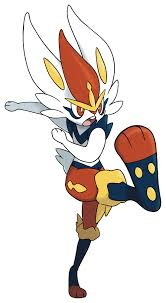

Guia dos Pokemon

Cinderace
Descrição
Cinderace é um Pokémon tipo Fogo da 8ª Geração (região de Galar), conhecido como o "Pokémon Artilheiro" e
evolução final do Scorbunny. Baseado em um coelho e jogador de futebol, destaca-se pela alta velocidade e força
física, criando bolas de fogo com seus pés para queimar adversários.
Características Principais:
- Habilidades de Combate: Alta força explosiva, excelente equilíbrio e capacidade de salto. Sua assinatura é a
Pyro Ball (Bola de Fogo).
- Físico: Atinge em média 1,40 m e 33 kg.
- Gigantamax: Pode assumir a forma Gigantamax, onde sua bola de fogo chega a mais de 100 metros de diâmetro e
nunca erra o alvo.
- Evolução: Evolui de Scorbunny (nível 16) e Raboot (nível 35).
- Personalidade: Habilidoso, mas pode ser exibicionista se animado.